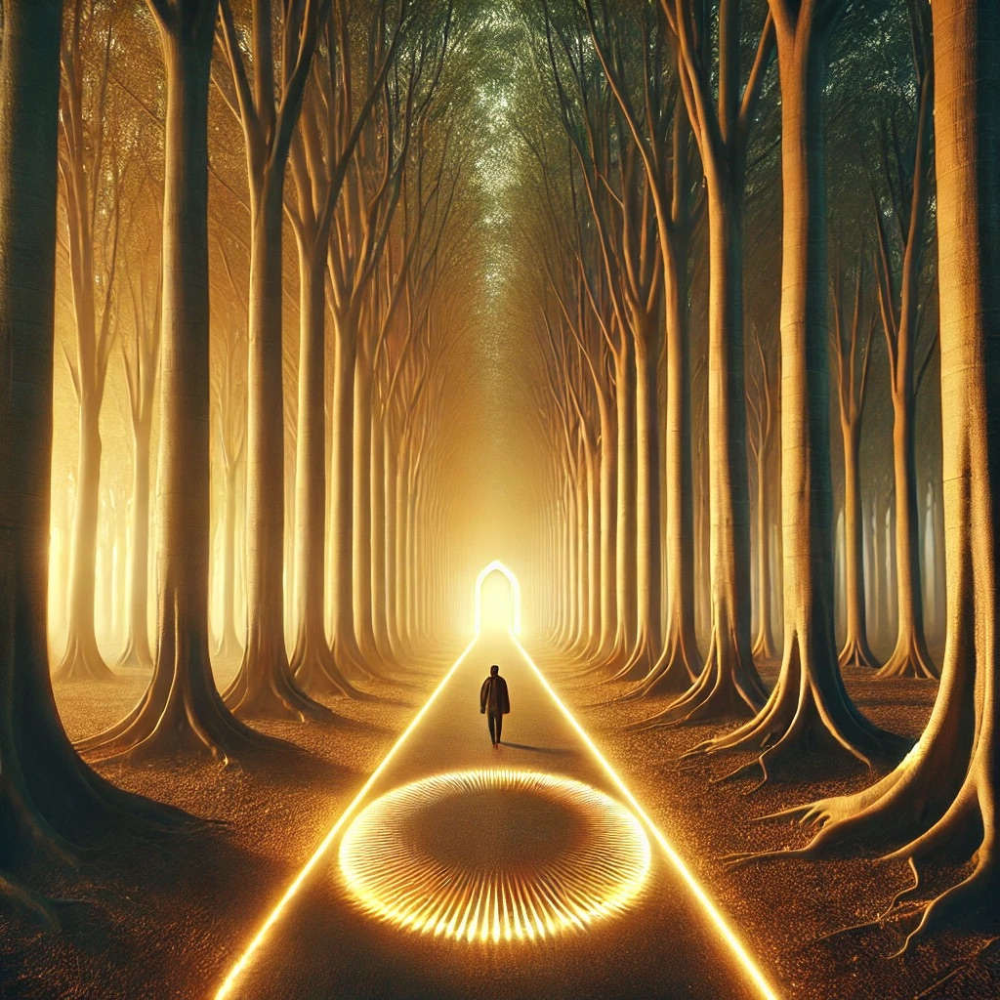

The center path stretches before you, straight and narrow, lined by tall, ancient trees whose branches form a canopy overhead. The ground beneath your feet feels solid yet oddly warm, as if the path itself is alive. A low, rhythmic hum resonates in the air, growing stronger with each step.
Soft golden light filters through the trees, illuminating the way forward. The compass in your hand glows brightly, its pulse perfectly in sync with the hum. It feels as though this path is leading you directly to the heart of something vast and powerful.
A serene voice, steady and calm, speaks softly within your mind:
“The center path holds the balance. It is not free of challenge, but it offers clarity to those who walk it. Will you trust the harmony of this journey?”
The path ahead leads toward a glowing archway, its form shifting and pulsing with energy. Beyond it, the hum intensifies, inviting you to step through.

What will you do?